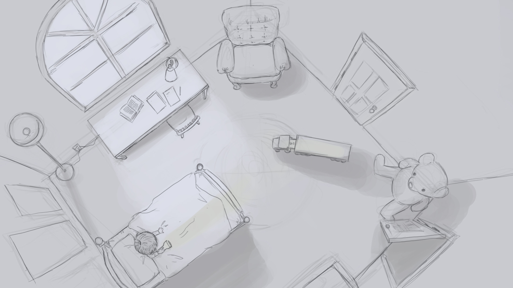
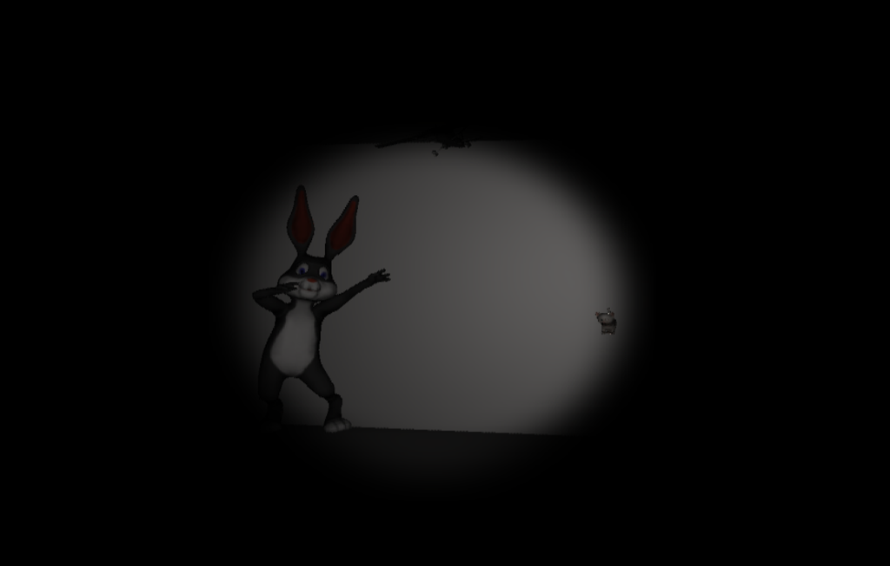

Wendy Chen
Team members: Sean Niu, Paul Luo, Chen Shao, Daniel Leibovic, Henok Addis
CPSC 439 Software Engineering, Spring 2016
The above video shows selected recordings from a desktop playthrough of Don't Blink.
Abstract
"Don't Blink" is Virtual Reality horror game developed in Unity, intended to be played while wearing an Oculus Rift. The premise: What if bedtime monsters come alive at night? With the absence of light, the monsters can move. When hit by light, the monsters freeze and are temporarily stunned for some duration. The game is set from the eyes of a child in a crib, armed with only a flashlight to fend off bedtime monsters. The flashlight battery is depletable, however... The player must switch off the light in order to shake and recharge it, and in the meanwhile, the monsters creep ever closer. If the player survives the duration of the night, the player wins. Otherwise, the monsters will surely catch you...
For this team project, I was primarily responsible for the game concept and design, described in the following section.
Game Design
The inspiration for building a VR horror game comes from considering both the limitations and advantages of VR as a technology. When wearing an Oculus Rift Headset, a player has a difficult time moving around in physical space, due to headset's wires and the player's inability to see his or her surroundings. However, VR also provides the opportunity for a fully immersive experience. If the player wears a headset and headphones, the player can be fully immersed visually and aurally.
Given the full visual and aural immersion that VR can provide, and given the lack of player mobility VR presents, I believed we could best utilize these two qualities to deliver a horror experience. I pitched the idea of a horror game where the player is strapped to their chair and cannot run from approaching monsters. My teammates got on board, and we decided to build this game for our class project.
To flesh out the game premise, we drew inspiration from Doctor Who's Weeping Angels, the assassins that turn into stone when someone looks at them. We decided that our player should be a small child who believes in bedtime monsters that only come out in the absence of light. Below is my initial concept sketch of the game:
In the concept sketch, I pitched the idea of simple user actions: looking and shining the flashlight.
We armed our player with only a flashlight to keep the gameplay simple. Thus, our frightened child can only look around his or her room, turn the flashlight on and off, and shake the flashlight to recharge the battery. To further mimic what a child might do, we also let the child call out for "Mommy!". Calling mom causes all the lights in the room to turn on, temporarily stunning all of the monsters.
After developing the game concept, the next challenge was the look of the game. Due to our team's limited time and 3D modeling experience, I used free assets from Unity to build the monsters and the world, supplementing these models with free assets found online. Below is a screenshot from the early days when the environment was still being developed:
Above: In this early screenshot from game development, I felt like we were hitting on something truly terrifying.
As demonstrated in the screenshot above, we have limited the player's field of view to only the objects illuminated by the flashlight. The impairment of the player's sight was a conscious decision made to emulate the same claustrophobic sensation felt when playing Slender. (In Slender, the edges of the player's field of view are darkened to mimic the game's night time environment, but also for maximizing the player's scare factor).
Implementation Details
The game was built in Unity, with scripts written in C#. The main areas of implementation were the timing, the flashlight, and the monsters.
Because the game is survive-the-night style, we mapped six minutes of real time to six hours in the game, elasping from 12AM to 6AM. The player must not allow any of the monsters to reach his or her bed for six minutes in order to win. The monsters remain stunned for a duration of time after being hit by light. Thus, the player's goal is to strategically use his flashlight battery towards stunning the monsters, preventing them from making it to the bed in six minutes. If the player does not shine light on any of the monsters, the game is programmed such that each monster can creep to the bed in under six minutes.
To check the game time, the player can look at the clock on the wall to his or her left. The clock's time will run from 12AM to 6AM, with each passing hour marking one minute in real time.
The flashlight was implemented as a spotlight overlayed with an invisible cone acting as a collider. Light collision could be easily detected by testing for collision with the collider. (Of course, this implementation does not account for occlusion, but we made this conscious choice to avoid the need for ray casting in an interactive game.) The flashlight was attached to the main camera, which we placed in the child's crib. When the camera moves, the light moves with it.
The monsters' paths are preprogrammed by use of waypoints. Each waypoint specifies a pause time and a speed at which the monster will travel towards it with. We decided against automatically generating random paths for the monsters to travel along, since random generation takes away from an artist's ability to design the game experience.
The monsters have colliders attached to them to detect collision with the flashlight collider. When a collision is detected, the monster pauses on its path for a set duration of time, and the animation is suspended.
Special thanks to Sean Niu and Paul Luo for spearheading the development on this project.
Game Play Details
To play our game, a desktop version is included in the Links section. The file can be unzipped and played on MacOSX.
A recap of player actions:
Z - turn flashlight on and off.
Space bar - smash to charge flashlight when flashlight is turned off.
M - Call mommy to turn on all the lights.
Links:
Source Code